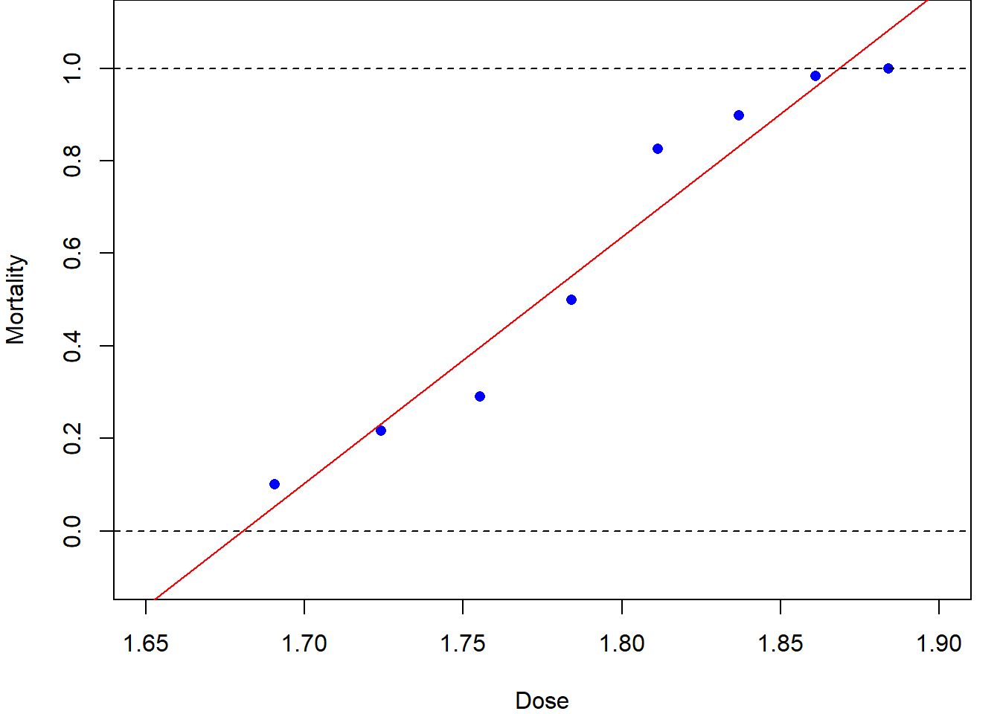
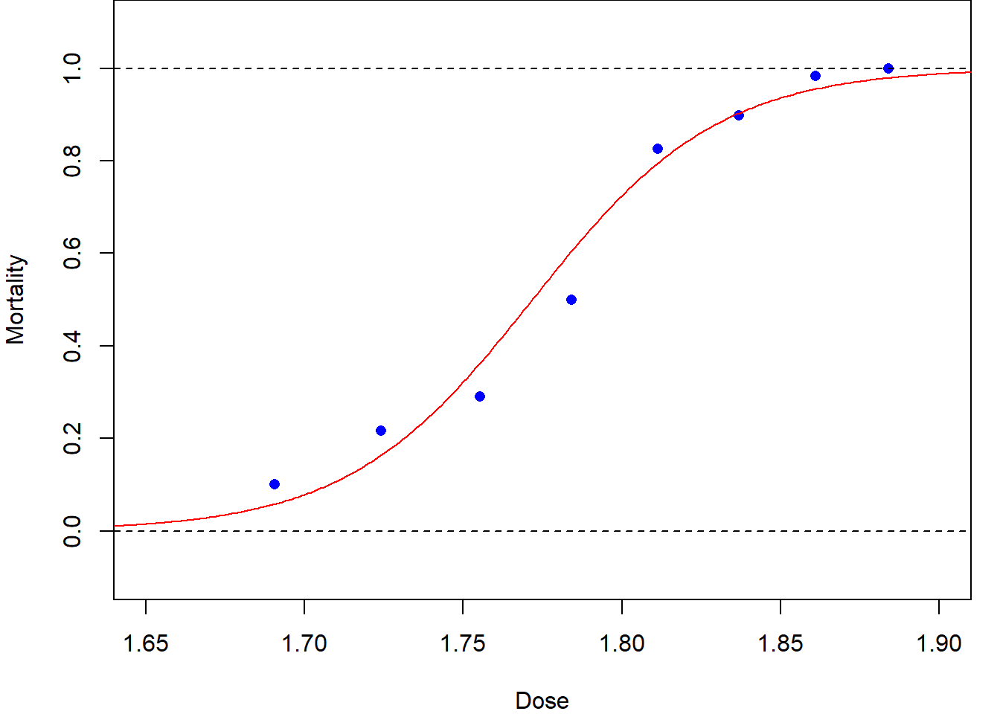

Code
xbar = mean(dose)
ybar = mean(mortality)
s2x = var(dose)
sxy = cov(dose, mortality)
betahat = sxy/s2x
alphahat = ybar-betahat*xbar
s2hat = sum((mortality-alphahat-betahat*dose)^2)/(length(dose)-2)\[ \def\b#1{\mathbf{#1}} \]
In previous modules you have studied linear models with a normally distributed error term, such as simple linear regression, multiple linear regression and ANOVA for normally distributed observations. In this module we will study generalized linear models.
Outline of the module:
This module will make extensive use of \(\mathbf{R}\) and hence it is very important that you are comfortable with its use. If you need some revision, then material is available on Minerva under RStudio Support.
The purpose of a generalized linear model is to describe the dependence of a response variable \(y\) on a set of \(p\) explanatory variables \(\b{x}=(x_1, x_2, \ldots, x_p)\) where, conditionally on \(\b{x}\), observation \(y\) has a distribution which is not necessarily normal.
Note that in these notes we may use lowercase letters, for example \(y\) or \(y_i,\) to denote both observed values or random variables, which is being considered should be clear from the context.
This module will make extensive use of many basic ideas from statistics. If you need some revision, then see Appendix A: Basic material on Minerva under Basic Pre-requisite Material.
Table 1.1 shows data1 on the number of beetles killed by five hours of exposure to 8 different concentrations of gaseous carbon disulphide.
Dose \(x_i\) |
No. of beetle \(m_i\) |
No. killed \(y_i\) |
|---|---|---|
| 1.6907 | 59 | 6 |
| 1.7242 | 60 | 13 |
| 1.7552 | 62 | 18 |
| 1.7842 | 56 | 28 |
| 1.8113 | 63 | 52 |
| 1.8369 | 59 | 53 |
| 1.8610 | 62 | 61 |
| 1.8839 | 60 | 60 |
Figure 1.1 (a) shows the same data with a linear regression line superimposed. Although this line goes close to the plotted points, we can see some fluctuations around it. More seriously, this is a stupid model: it would predict a mortality rate of greater than 100% at a dose of 1.9 units, and a negative mortality rate at 1.65 units!
beetle = read.table("https://rgaykroyd.github.io/MATH3823/Datasets/beetle.txt", header=T)
dose = beetle$dose
mortality = beetle$died/beetle$total
plot(dose, mortality, pch=16,
xlim=c(1.65, 1.90), xlab ="Dose",
ylim=c(-0.1, 1.1), ylab="Mortality")
abline(h=c(0,1), lty=2)
lm.fit = lm(mortality ~ dose)
abline(lm.fit)
plot(dose, mortality, pch=16,
xlim=c(1.65, 1.90), xlab ="Dose",
ylim=c(-0.1, 1.1), ylab="Mortality")
abline(h=c(0,1), lty=2)
y = cbind(beetle$died, beetle$total-beetle$died)
glm.fit = glm(y ~ dose, family=binomial(link='logit'))
output.dose = seq(1.6,1.95,0.001)
fitted = predict(glm.fit, data.frame(dose=output.dose), type="response")
lines(output.dose, fitted)

A more sensible dose–response relationship for the beetle mortality data might be based on the logistic function (to be defined later), as plotted in Figure 1.1 (b). The resulting curve is a closer, more-sensible, fit. Later in this module we will see how this curve was fitted using maximum likelihood estimation for an appropriate generalized linear model.
This is an example of a dose-response experiment which are widely used in medical and pharmaceutical situations.
Warning of potentially sensitive material. For further information on dose-response experiments see, for example, www.britannica.com/science/dose-response-relationship.
Suppose that we have \(n\) paired data values \((x_1, y_1),\dots, (x_n, y_n)\) and that we believe these are related by a linear model
\[ y_i = \alpha+\beta x_i +\epsilon_i \]
for all \(i\in \{1, 2,\dots,n\}\), where \(\epsilon_1,\dots,\epsilon_n\) are independent and identically distributed (iid) with \(\mbox{E}(\epsilon_i)=0\) and \(\mbox{Var}(\epsilon_i)=\sigma^2\). The aim will be to find values of the model parameters, \(\alpha, \beta \text{ and } \sigma^2\) using the data. Specifically, we will estimate \(\alpha\) and \(\beta\) using the values which minimize the residual sum of squares (RSS)
\[ RSS(\alpha, \beta) = \sum_{i=1}^n \left(y_i-(\alpha+\beta x_i)\right)^2. \tag{1.1}\]
This measures how close the data points are around the regression line and hence the resulting estimates, \(\hat\alpha\) and \(\hat\beta\), will give us a fitted regression line which is closest to the data.
It can be shown that Equation 1.1 takes its minimum when the parameters are given by
\[ \hat\alpha = \bar y -\hat\beta\bar x, \quad \mbox{and} \quad \hat\beta = \frac{s_{xy}}{s^2_x} \tag{1.2}\]
where \(\bar x\) and \(\bar y\) are the sample means,
\[ s_{xy}=\frac{1}{n-1}\sum_{i=1}^n (x_i-\bar x)(y_i-\bar y) \]
is the sample covariance and
\[ s^2_x = \frac{1}{n-1} \sum_{i=1}^n (x_i-\bar x)^2 \]
is the sample variance of the \(x\) values. It can be shown that these estimators are unbiased, that is \(\mbox{E}[\hat\alpha]=\alpha\) and \(\mbox{E}[\hat\beta]=\beta\) – see Section 1.5.
The fitted regression lines is then given by \(\hat y = \hat \alpha +\hat \beta x\), the fitted values by \(\hat y_i = \hat \alpha +\hat \beta x_i\), and the model residuals by \(r_i= \hat \epsilon_i= y_i-\hat y_i\) for all \(i\in \{1,\dots,n\}\).
To complete the model fitting, we also estimate the error variance, \(\sigma^2\), using \[ \hat \sigma^2 = \frac{1}{n-2} \sum _{i=1}^n r_i^2. \tag{1.3}\]
Note that, by construction, \(\bar r=0\) and, further, it can be shown that \(\hat \sigma^2\) is an unbiased estimator of \(\sigma^2\), that is \(\mbox{E}[\hat\sigma^2]=\sigma^2\).
xbar = mean(dose)
ybar = mean(mortality)
s2x = var(dose)
sxy = cov(dose, mortality)
betahat = sxy/s2x
alphahat = ybar-betahat*xbar
s2hat = sum((mortality-alphahat-betahat*dose)^2)/(length(dose)-2)Returning to the above beetle data example, we have \(\hat\alpha=\)-8.947843, \(\hat\beta=\) 5.324937, and \(\hat \sigma^2 =\) 0.0075151.
We will interpret the output later, but in \(\b{R}\), the fitting can be done with a single command with corresponding fitting output from a second command:
lm.fit = lm(mortality ~ dose)
summary(lm.fit)
Call:
lm(formula = mortality ~ dose)
Residuals:
Min 1Q Median 3Q Max
-0.10816 -0.06063 0.00263 0.05119 0.12818
Coefficients:
Estimate Std. Error t value Pr(>|t|)
(Intercept) -8.9478 0.8717 -10.27 4.99e-05 ***
dose 5.3249 0.4857 10.96 3.42e-05 ***
---
Signif. codes: 0 '***' 0.001 '**' 0.01 '*' 0.05 '.' 0.1 ' ' 1
Residual standard error: 0.08669 on 6 degrees of freedom
Multiple R-squared: 0.9524, Adjusted R-squared: 0.9445
F-statistic: 120.2 on 1 and 6 DF, p-value: 3.422e-05You should have met \(\b{R}\) output like this in previous statistics modules, but if you need some revision then see Appendix-C: Background to Analysis of Variance on Minerva under Basic Pre-requisite Material.
The way a variable enters a model will depends on its type. The most common five types of variable are:
Note that although dichotomous is clearly a special case of polytomous, making the distinction is usually worthwhile as it often leads to a simplified modelling and testing approach.
Unless otherwise stated, data files will be available online at: rgaykroyd.github.io/MATH3823/Datasets/filename.ext, where filename.ext is the stated filename with extension.
1.1 Consider again the beetle data in Table 1.1. Perform the calculations by hand and then check the answers using \(\b{R}\) – a copy of the data is available in the file beetle.txt. Finally plot the fitted regression line on a scatter plot of the data. [Hint: See the code chunk used to produce Figure 1.1.]
1.2 Consider the following synthetic data:
| \(i=1\) | \(i=2\) | \(i=3\) | \(i=4\) | \(i=5\) | \(i=6\) | \(i=7\) | \(i=8\) | |
|---|---|---|---|---|---|---|---|---|
| \(x_i\) | -1 | 0 | 1 | 2 | 2.5 | 3 | 4 | 6 |
| \(y_i\) | -2.8 | -1.1 | 7.2 | 8.0 | 8.9 | 9.2 | 14.8 | 24.7 |
Plot the data to check that a linear model is suitable and then fit a linear regression model. Do you think that the fitted model can be reliably used to predict the values of \(y\) when \(x=5\) and \(x=10\)? Justify your answers.
1.3 Starting from Equation 1.1, derive the estimation equations given in Equation 1.2. Further, show that \(\hat\alpha\) and \(\hat\beta\) are unbiased estimators of \(\alpha\) and \(\beta\). [Hint: Check your MATH1712 lecture notes.]
What can be said about \(\hat\sigma^2\) as an estimator of \(\sigma^2\)? [Hint: There is a careful theoretical proof, but here only an intuitive explanation is expected.]
1.4 The Brownlee’s Stack Loss Plant Data2 is already available in \(\mathbf{R}\), with background details on the help page, \(\texttt{?stackloss}\). [Hint: You already met this example in MATH1712.]
After plotting all pairs of variables, which of \(\texttt{Air.Flow}\), \(\texttt{Water.Temp}\) and \(\texttt{Acid.Conc}\) do you think could be used to model \(\texttt{stack.loss}\) using a linear regression? Justify your answer.
Perform a simple linear regression with using \(\texttt{stack.loss}\) as the response variable and your chosen variable as the explanatory variable. Add the fitted regression line to a scatter plot of the data and comment.
1.5 In an experiment conducted by de Silva et al. in 20203 data was obtained to investigate falling objects and gravity, as first consider by Galileo and Newton. A copy of the data is available in the file physics_from_data.csv.
Read the data file into \(\b{R}\) and perform a simple linear regression of the maximum Reynolds number as the response variable and, in turn, each of the other variables as the explanatory variable.
Plot the data and add the corresponding fitted linear models. Which variable do you think helps explain Reynolds number the best? Why do you think this?
Here are an infinite number of further numerical examples from maths e.g. (thanks to https://www.mathcentre.ac.uk/):
Finding the intersercept
Finding the slope - Part 1
Finding the slope - Part 2
Dobson and Barnett, 3rd edn, p.127↩︎
Brownlee, K. A. (1960, 2nd ed. 1965) Statistical Theory and Methodology in Science and Engineering. New York: Wiley. pp. 491–500.↩︎
de Silva BM, Higdon DM, Brunton SL, Kutz JN. Discovery of Physics From Data: Universal Laws and Discrepancies. Front Artif Intell. 2020 Apr 28;3:25. doi: 10.3389/frai.2020.00025. PMID: 33733144; PMCID: PMC7861345.↩︎